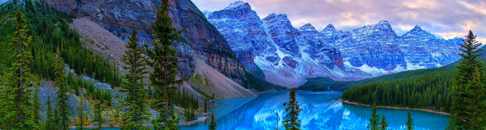

|  |
|
In today's world, the conservation and management of protected areas have gained significant importance due to the pressing environmental challenges we face. These designated spaces, such as national parks, wildlife reserves, and marine sanctuaries, play a vital role in safeguarding biodiversity, preserving fragile ecosystems, and mitigating the impacts of climate change. As our planet grapples with issues like deforestation, habitat loss, species extinction, and the degradation of natural resources, protected areas serve as critical bastions of ecological integrity. They not only offer refuge to countless species but also provide essential ecosystem services like clean air and water, carbon sequestration, and recreational opportunities for people. However, these areas face a myriad of threats, ranging from poaching and illegal logging to encroachment and climate change. Understanding the issues concerning protected areas is paramount in our quest to balance the needs of conservation and human development, and to ensure the sustainability of our planet for current and future generations. |
Here are recent articles, reports, and resources
related to the issues and strategies concerning protected areas:
Submissions
| 1 | 3 | 4 | 5 |
| Assignment 1 | Assignment 3 | Project | PTR |